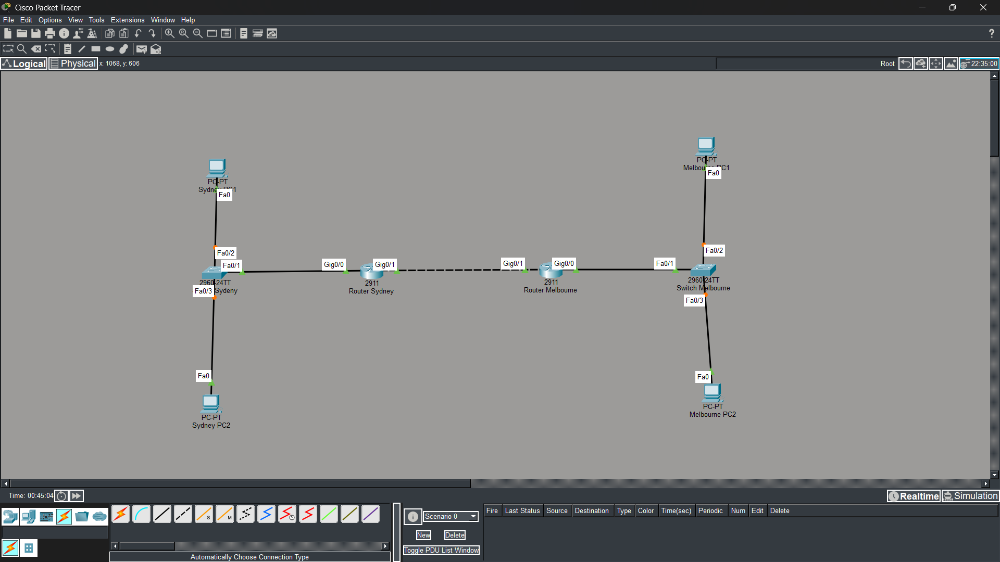
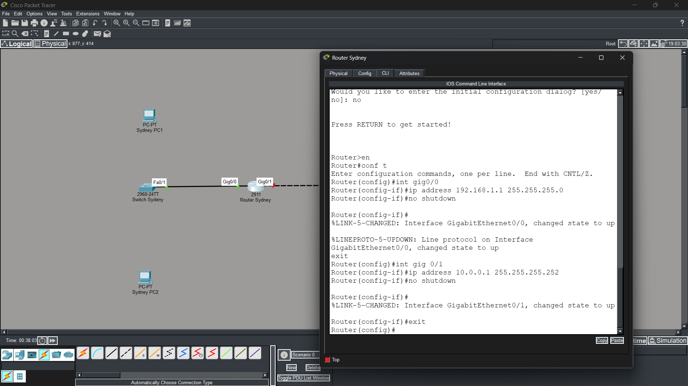
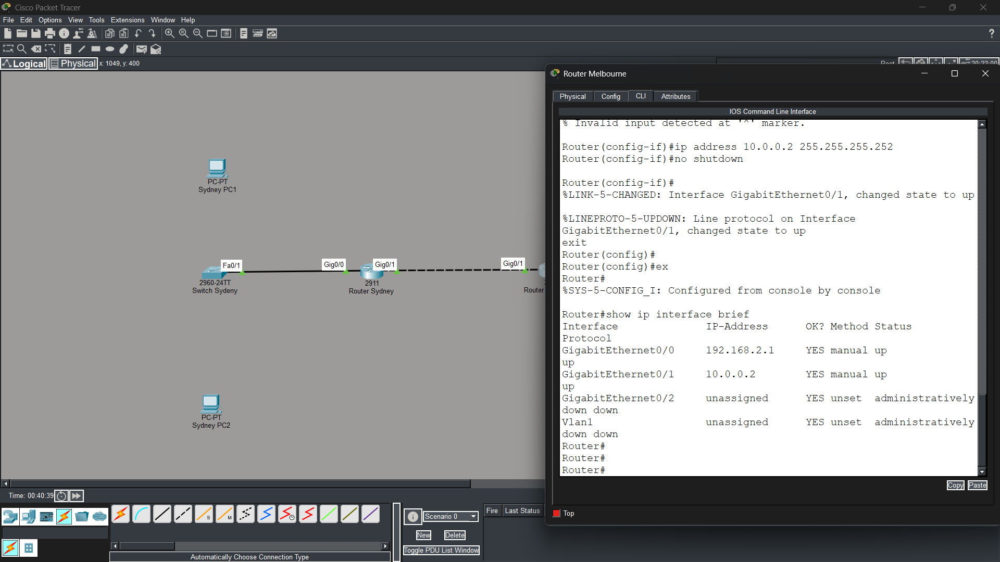
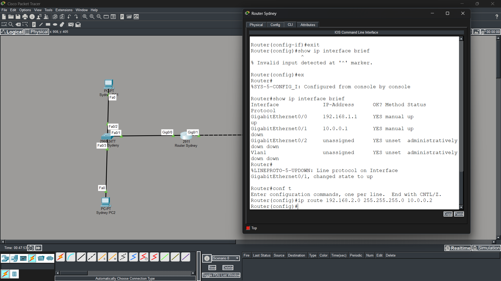
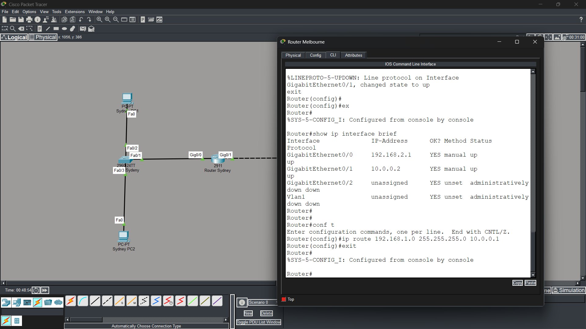
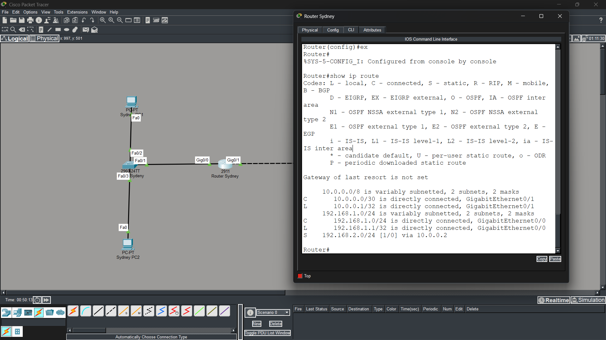
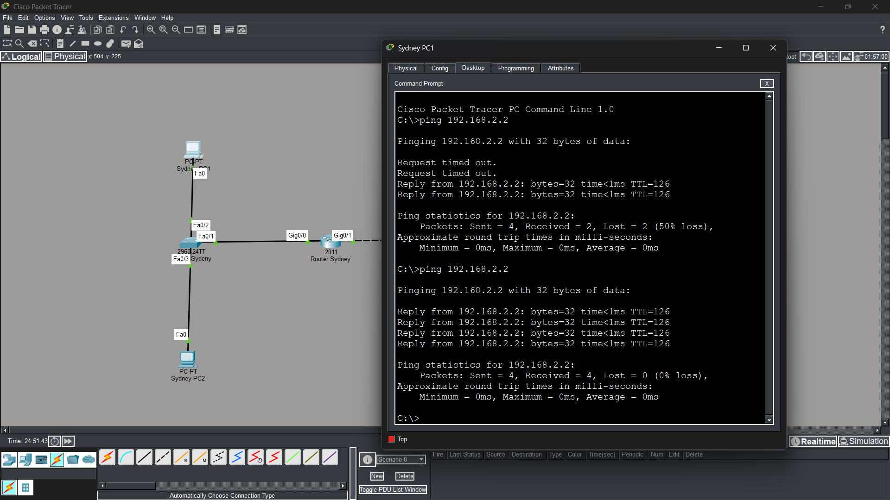

Static Routing —
Inter-Office WAN
Apex Solutions: Sydney ↔ Melbourne · Cisco Packet Tracer
Project Overview
This lab simulates a wide area network connecting two branch offices of Apex Solutions — Sydney and Melbourne — using static routing in Cisco Packet Tracer. Each site has a dedicated router, a Layer 2 switch, and two end-user PCs. The routers are linked via a point-to-point /30 WAN link.
Static routes are manually configured on each router so they know how to reach the remote network. The goal is to understand how routers forward packets to networks they're not directly connected to, and to verify full bidirectional connectivity with ICMP ping tests.
Network Topology

Switch Sydney (Fa0/1 → Gig0/0) · Router Sydney (Gig0/1 ↔ Gig0/1) · Router Melbourne (Gig0/0 ← Fa0/1) · Switch Melbourne
| Connection | Port A | Port B |
|---|---|---|
| Switch Sydney → Router Sydney | Fa0/1 | Gig0/0 |
| Switch Melbourne → Router Melbourne | Fa0/1 | Gig0/0 |
| Router Sydney → Router Melbourne (WAN) | Gig0/1 | Gig0/1 |
Addressing Scheme
Three subnets are used. The /30 point-to-point link between the two routers conserves address space — providing exactly 2 usable host addresses for the WAN link.
| Device | Interface | IP Address | Subnet Mask | Role |
|---|---|---|---|---|
| Router Sydney | Gig0/0 | 192.168.1.1 | 255.255.255.0 | LAN gateway |
| Router Sydney | Gig0/1 | 10.0.0.1 | 255.255.255.252 | WAN link |
| Router Melbourne | Gig0/0 | 192.168.2.1 | 255.255.255.0 | LAN gateway |
| Router Melbourne | Gig0/1 | 10.0.0.2 | 255.255.255.252 | WAN link |
| Sydney PC1 | Fa0 | 192.168.1.2 | 255.255.255.0 | End device |
| Sydney PC2 | Fa0 | 192.168.1.3 | 255.255.255.0 | End device |
| Melbourne PC1 | Fa0 | 192.168.2.2 | 255.255.255.0 | End device |
| Melbourne PC2 | Fa0 | 192.168.2.3 | 255.255.255.0 | End device |
Router Configuration
Topology setup
Placed 2 routers, 2 switches, and 4 PCs. Connected switches to routers on Fa0/1 → Gig0/0, and the two routers to each other on Gig0/1 ↔ Gig0/1 using the automatic cable.
Router Sydney — interface configuration
Assigned IPs to both interfaces via Cisco IOS CLI and brought them up with no shutdown.
Router Melbourne — interface configuration
Same process on the Melbourne router — Gig0/0 assigned 192.168.2.1 and Gig0/1 assigned 10.0.0.2. Both interfaces confirmed up/up with show ip interface brief.
PC IP addressing
Configured static IPs, subnet masks, and default gateways on all four PCs via Desktop → IP Configuration.
Static routes added
Added the static route on each router to reach the remote network via the WAN link next-hop address.

Gig0/0: 192.168.1.1 · Gig0/1: 10.0.0.1 · both up

Gig0/0: 192.168.2.1 · Gig0/1: 10.0.0.2 · both up/up
Static Route Commands
Without static routes, each router only knows its directly connected networks. The static routes below tell each router the next-hop address for the remote site.
| Router | Command | Meaning |
|---|---|---|
| Router Sydney | ip route 192.168.2.0 255.255.255.0 10.0.0.2 | Send Melbourne traffic to Router Melbourne |
| Router Melbourne | ip route 192.168.1.0 255.255.255.0 10.0.0.1 | Send Sydney traffic to Router Sydney |


Verification & Results

C = directly connected · L = local · S = static route · S 192.168.2.0/24 [1/0] via 10.0.0.2 confirms the route is active

First attempt: 50% loss (ARP resolution) · Second attempt: 4/4 packets, 0% loss · Bidirectional connectivity confirmed
The initial 50% loss on the first ping is expected — the router needed to resolve the MAC address of the next-hop via ARP before it could forward packets. On the second attempt, all 4 packets went through with 0% loss.